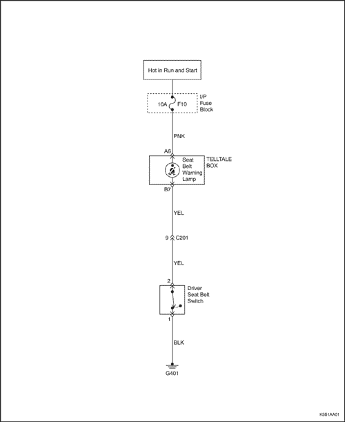

SECCIÓN 8A
CINTURONES DE SEGURIDAD
Precaución: Desconecte el cable negativo de la batería antes de desmontar o instalar cualquier unidad eléctrica o cuando exista la posibilidad de que una herramienta o equipo pueda entrar en contacto con bornes eléctricos expuestos. La desconexión de dicho cable ayudará a evitar lesiones personales y daños al vehículo. La llave de contacto debe estar en posición LOCK a menos que se indique lo contrario.
ESPECIFICACIONES
Especificaciones de apriete
| Aplicación | N·m | Árbol de transmisión izquierdo | Articulación |
| Tornillo de anclaje del cinturón de seguridad | 38 | 28 | - |
| Tornillo inferior del cinturón de seguridad | 38 | 28 | - |
| Tornillo del retractor del cinturón de seguridad | 38 | 28 | - |
| Tornillos del regulador de altura del cinturón de seguridad | 38 | 28 | - |
| Tornillo de la hebilla del cinturón de seguridad | 38 | 28 | - |
DIAGRAMAS DE ESQUEMAS Y DIRECCIONES
Aviso del cinturón de seguridad del conductor



Localización de los componentes
Cinturón de seguridad delantero y trasero
- Cinturón de seguridad delantero
- Hebilla del cinturón de seguridad delantero
- Regulador de altura del cinturón de seguridad delantero
- Cinturón de seguridad exterior trasero (de tres puntos de anclaje)
- Cinturón de seguridad central trasero (de tres puntos de anclaje)
- Cinturón de seguridad central trasero (de dos puntos de anclaje / Hebilla (de tres puntos de anclaje)
- Hebilla del cinturón de seguridad trasero
DIAGNÓSTICO
No funciona la luz de aviso del cinturón de seguridad
No funciona la luz de aviso del cinturón de seguridad
| Estado | Causa probable | Medida correctora |
- No funciona la luz de aviso del cinturón de seguridad
| | - Sustituya el fusible F10.
|
- Cableado de la luz de aviso del cinturón de seguridad en circuito abierto o cortocircuito.
| |
- Falla la continuidad entre los dos terminales en el lado del interruptor del conector.
| - Sustituya el interruptor del cinturón de seguridad.
|
- Falla la continuidad entre el terminal para el cable BLK y masa.
| - Repare la masa interrumpida.
|
- La bombilla de la luz de aviso del cuadro de instrumentos está fundida.
| - Sustituya la bombilla de la luz de aviso.
|
MANTENIMIENTO Y REPARACIÓN
servicio con vehículo en marcha
Cinturón de seguridad delantero de tres puntos de anclaje (con pretensor)
Procedimiento de desmontaje
- Eche el asiento delantero hacia adelante y repliegue el respaldo.

- Desmonte el panel de guarnecido del montante B inferior. Consulte la Sección 9G, Guarnecido interior.
- Quite el tornillo que hay en el montante B superior.
- Utilizando un destornillador de punta plana, quite la tapa (1).
- Quite el tornillo (2).
- Retire el espaciador y la arandela de fibra (3).

- Quite el tornillo del retractor del cinturón de seguridad.
- Retire la alfombrilla para poder ver el retractor.
- En vehículos equipados con pretensor, desconecte el conector (1).
- Quite el tornillo (2).
- Retire el espaciador y la arandela de fibra (3).

procedimiento de montaje
Aviso: Metales distintos en contacto directo pueden corroerse rápidamente. Asegúrese de utilizar los elementos de sujeción correctos para evitar una corrosión prematura.
- Monte el retractor del cinturón de seguridad.
- Retractor del cinturón de seguridad con tornillo (a).
Apretar
Apriete el tornillo del retractor del cinturón de seguridad hasta 38 N•m (28 lb-pie).
- En vehículos equipados con pretensor, conecte el conector (1).

- Monte el anclaje del cinturón de seguridad con el tornillo y la tapa.
Apretar
Apriete el tornillo del anclaje del cinturón de seguridad hasta 38 N•m (28 lb-pie).
- Monte el panel de guarnecido del montante B inferior. Consulte la Sección 9G, Guarnecido interior.
- Vuelva a colocar en su posición el respaldo del asiento.

Regulador de altura del cinturón de seguridad delantero (sólo lado del conductor)
Procedimiento de desmontaje
- Quite el anclaje del cinturón de seguridad y el tornillo del montante B superior. Consulte "Cinturón de seguridad delantero de tres puntos de anclaje" en esta misma sección.
- Desmonte el panel de guarnecido del montante- B superior. Consulte la Sección 9G, Guarnecido interior.
- Quite los tornillos y desmonte el regulador de altura del cinturón de seguridad.

procedimiento de montaje
- Monte el regulador de altura del cinturón de seguridad con sus tornillos.
Apretar
Apriete los tornillos del regulador de altura del cinturón de seguridad delantero hasta 38 N•m (28 lbs-pie).
- Monte el panel de guarnecido del montante B superior. Consulte la Sección 9G, Guarnecido interior.
- Monte el anclaje del cinturón de seguridad con el tornillo del montante B superior. Consulte "Cinturón de seguridad de tres puntos de anclaje" en esta misma sección.

Hebilla del cinturón de seguridad delantero
Procedimiento de desmontaje
- Desmonte la hebilla del cinturón de seguridad delantero.
- Quite el tornillo (1).
- Desmonte la hebilla (2).
- Retire el parche (3).
- Antes de quitar la hebilla del cinturón de seguridad del lado del conductor, desconecte el conector eléctrico.

procedimiento de montaje
- Monte la hebilla del cinturón de seguridad delantero.
- Enchufe el conector eléctrico.
- Monte el parche.
- Monte la hebilla.
- Coloque el tornillo.
Apretar
Apriete el tornillo de la hebilla del cinturón de seguridad hasta 38 N•m (28 lb-pie).

Cinturón seguridad exterior trasero con tres puntos de anclaje
(Se muestra el cinturón de seguridad exterior, el cinturón de seguridad central de tres puntos de anclaje debe sustituirse junto con el respaldo del asiento trasero)
Procedimiento de desmontaje
- Desmonte el cojín y el respaldo del asiento trasero. Consulte la Sección 9H, Asientos.
- Desmonte la bandeja lateral trasera.
- Desenchufe el conector de los altavoces traseros (1).
- Quite los tornillos (2).
- Desmonte la bandeja lateral trasera (3).

- Quite el tornillo inferior del piso.
- Desmonte el panel de guarnecido basculante trasero. Consulte la Sección 9G, Guarnecido interior.

- Quite el tornillo del panel del guarnecido del montante C.
- Quite la tapa utilizando un destornillador de punta plana (1).
- Quite el tornillo (2).
- Retire los espaciadores de arandelas (3).

- Quite el tornillo del retractor del cinturón de seguridad.
- Quite el tornillo (1).
- Retire el espaciador y la arandela de fibra (2).

procedimiento de montaje
- Coloque el tornillo del retractor del cinturón de seguridad y el tornillo del anclaje.
Apretar
Apriete el tornillo del anclaje del cinturón de seguridad hasta 38 N•m (28 lb-pie) (a).
Apriete el tornillo del retractor del cinturón de seguridad hasta 38 N•m (28 lb-pie) (b).
- Coloque la tapa.
- Monte el panel de guarnecido basculante trasero. Consulte la Sección 9G, Guarnecido interior.

- Coloque el tornillo inferior del piso.
Apretar
Apriete el tornillo del piso hasta 38 N•m (28 lbs-pie).

- Monte la bandeja lateral trasera.
- Monte el cojín y el respaldo del asiento trasero. Consulte la Sección 9H, Asientos.

Cinturón de seguridad central trasero LAB con dos puntos de anclaje y hebilla
Procedimiento de desmontaje
- Desmonte el cojín del asiento trasero. Consulte la Sección 9H, Asientos.
- Desmonte el cinturón de seguridad de dos puntos de anclaje y la hebilla.

procedimiento de montaje
- Monte el cinturón de seguridad trasero de dos puntos de anclaje y la hebilla con el tornillo.
Apretar
Apriete el tornillo de la hebilla del cinturón de seguridad trasero con dos puntos de anclaje y el tornillo del cinturón de seguridad trasero con dos puntos de anclaje hasta 38 N•m (28 lbs-pie).
DESCRIPCIÓN GENERAL Y FUNCIONAMIENTO DEL SISTEMA
Aviso del cinturón de seguridad del conductor
El cinturón de seguridad del conductor incorpora una luz de aviso en el cuadro de instrumentos que, al girar la llave de contacto a la posición ON, recuerda al conductor que el cinturón no está abrochado.
Pretensor del cinturón de seguridad delantero con tres puntos de anclaje
El pretensor del cinturón de seguridad delantero es opcional. Incluye un retractor pirotécnico controlado automáticamente, que reduce la flojedad del cinturón de seguridad cuando éste es activado en un choque frontal recto o en ángulo. El cinturón de seguridad delantero con pretensor debe cambiarse después de un accidente que lo haya activado.
Cinturón de seguridad delantero WLR con tres puntos de anclaje
El cinturón de seguridad con retractor de bloqueo de correa (WLR) y anclaje de tres puntos limitará el movimiento del conductor y dará mayor protección en caso de accidente.
Cinturón de seguridad delantero ELR con tres puntos de anclaje
El cinturón de seguridad con retractor de bloqueo de emergencia (ELR) y anclaje de tres puntos está siempre desbloqueado, lo que permite la libertad de movimiento del pasajero, excepto en caso de emergencia como cuando se produce una desaceleración o aceleración rápida o maniobras en curvas cerradas.
Cinturón de seguridad exterior y central traseros ELR con tres puntos de anclaje
Las posiciones de asiento exteriores y central de la parte trasera emplean cinturones de seguridad con retractor de bloqueo de emergencia (ELR) y tres puntos de anclaje. El cinturón de seguridad con retractor de bloqueo de emergencia (ELR) y anclaje de tres puntos está siempre desbloqueado, lo que permite la libertad de movimiento del pasajero, excepto en caso de emergencia, como cuando se produce una desaceleración o aceleración rápida o maniobras en curvas cerradas.
Cinturón de seguridad central trasero LAP con dos puntos de anclaje (no disponible en Europa Occidental)
El cinturón de seguridad abdominal central con dos puntos de anclaje es una tira única de tejido continuo. La correa del cinturón de seguridad parte del anclaje, pasa por una placa de cierre y acaba en el interior de un solo retractor.
Comprobaciones operaciones y funcionales
Precaución: - Mantenga los objetos cortantes y potencialmente dañinos alejados de los cinturones de seguridad.
- Trate de no dañar o deformar la hebilla o la placa del cierre.
- No decolore o tiña la correa del cinturón de seguridad. Para lavar los cinturones, utilice, únicamente, agua y un jabón suave.
- Cuando se monten los tornillos del anclaje del cinturón de seguridad, comience apretando los tornillos con la mano para evitar que se pasen de rosca.
- No trate de efectuar ningún tipo de reparación en el mecanismo del retractor ni en las tapas. Sustituya cualquier conjunto defectuoso por otro nuevo.
- Sustituya cualquier cinturón de seguridad que esté cortado o haya sufrido cualquier tipo de daño.
- Compruebe todos los tornillos de anclaje de los cinturones de seguridad con el objeto de verificar que estén firmemente apretados.
- Compruebe la hebilla del cinturón de seguridad. Esta hebilla debe poder cerrarse y abrirse fácilmente.
- Después de introducir el cierre en la hebilla, tire bruscamente del cinturón. La hebilla debe permanecer cerrada.
- Extienda ampliamente la parte del hombro del cinturón de seguridad para asegurarse de que no haya torceduras ni roturas en el mismo.
- Deje que el cinturón se recoja completamente sobre el hombro. El cinturón debe retraerse con facilidad.